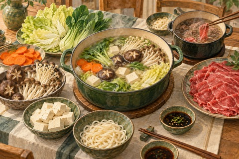
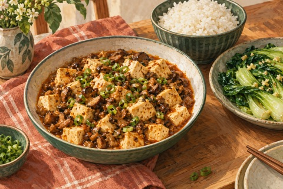
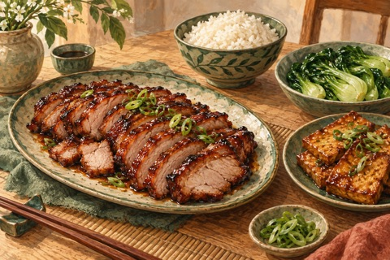
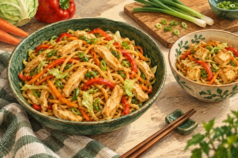
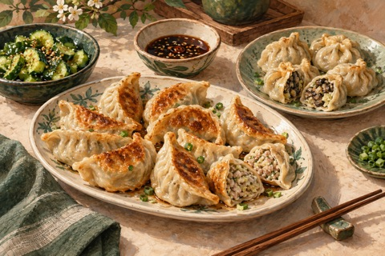
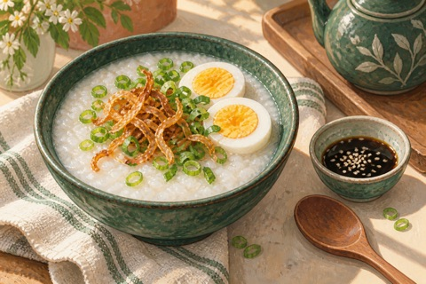
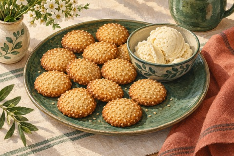

Maanantai4 ruokailijaa
Viikko 3
Kiina
Wokkiruokia, itse tehtyjä jiaozi-nyyttejä ja sunnuntain hot pot. Chili tarjoillaan erikseen.
4 annosta päivittäin · tarvittaessa 3 liha- ja 1 kasvisannos

03viikko
Päiväkohtainen suunnitelma
Ruokalista
Avaa resepti ruoan nimestä. Ohjeessa ovat ainekset, valmistus ja mahdollinen kasvisversio.
Tiistai4 ruokailijaa

Päivällinen
Mieto mapo-tyylinen tofu ↗
Tofua ja sieniä misokastikkeessa, riisiä ja valkosipulilla paistettua paksoita.
Keskiviikko4 ruokailijaa

Päivällinen
Char siu -tyylinen possu ja tofu ↗
Hoisinilla maustettua uunipossua, erillinen tofuannos, riisiä ja paksoita.
Torstai4 ruokailijaa

Päivällinen
Kana-kasvisnuudelit ↗
Paistettuja nuudeleita ja kasviksia, yhdelle broilerin sijaan tofua.
Perjantai4 ruokailijaa

Päivällinen
Jiaozi-nyytit kahdella täytteellä ↗
Itse tehdyt possu-kaali- ja sieni-kaalinyytit, kurkkusalaatti ja dippikastike.
Lauantai4 ruokailijaa

Aamiainen
Congee-riisipuuro ↗
Suolaista riisipuuroa, kananmunia, kevätsipulia ja rapeaksi paistettua sipulia.

Päivällinen
Gong bao -tyylinen kana ilman maapähkinöitä ↗
Kana-paprikawokki kirpeänmakeassa kastikkeessa, yhdelle tofuversio.
Sunnuntai4 ruokailijaa
Päivällinen
Hot pot ↗
Yhteinen kasvisliemi, tofua, kasviksia ja nuudeleita. Naudanliha kypsennetään omassa kattilassaan.

Jälkiruoka
Seesamikeksit ja vaniljajäätelö ↗
Helppo vaihtoehto seesamipalloille, ilman erikoisjauhoja.